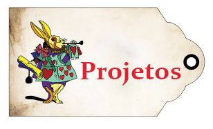

Bem-Vindos!!
Eu sou Nicole Baraldi,
Graduanda de Análise e Desenvolvimento de Sistemas
Fatec-Sorocaba
Bem-Vindos!!
Eu sou Nicole Baraldi,
Graduanda de Análise e Desenvolvimento de Sistemas
Fatec-Sorocaba
Sobre Mim
Olá meu nome é Nicole mas algumas pessoas me chamam de Nikk!Tenho anos e sou graduanda tecnóloga da Fatec de Sorocaba em Análise e desenvolvimento de sistemas, atualmente curso o 5º semestre.
Na atualidade busco por uma oportunidade na área para o amadurecimento profissional e a expansão da carreira.
Na vida pessoal, sou uma pessoa muito comunicativa e espontânea, que ama animais e comer doces! principalmente chocolate. Nas horas vagas amo jogar The Sims, assistir filmes, séries e gameplays.
C e C#
Linguagem de programação abordada nas matérias de Linguagem de Programação 1, LP 2 e Estrutura de dados
Java
Linguagem de programação abordada na matéria de Programação Orientada a Objetos